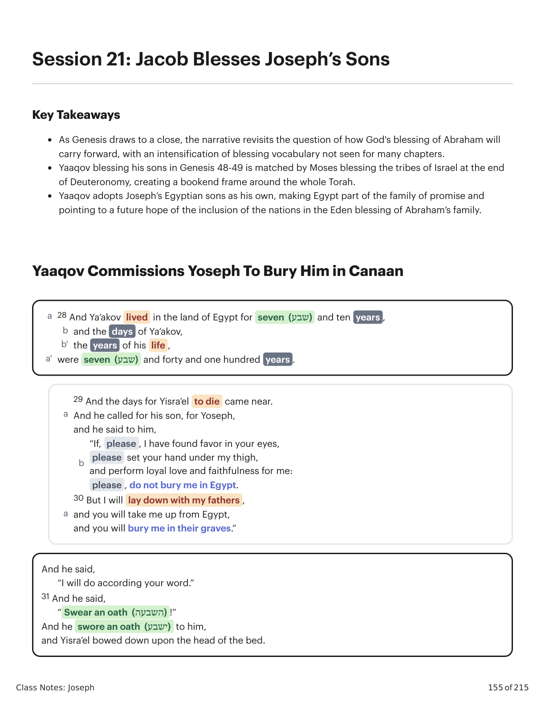
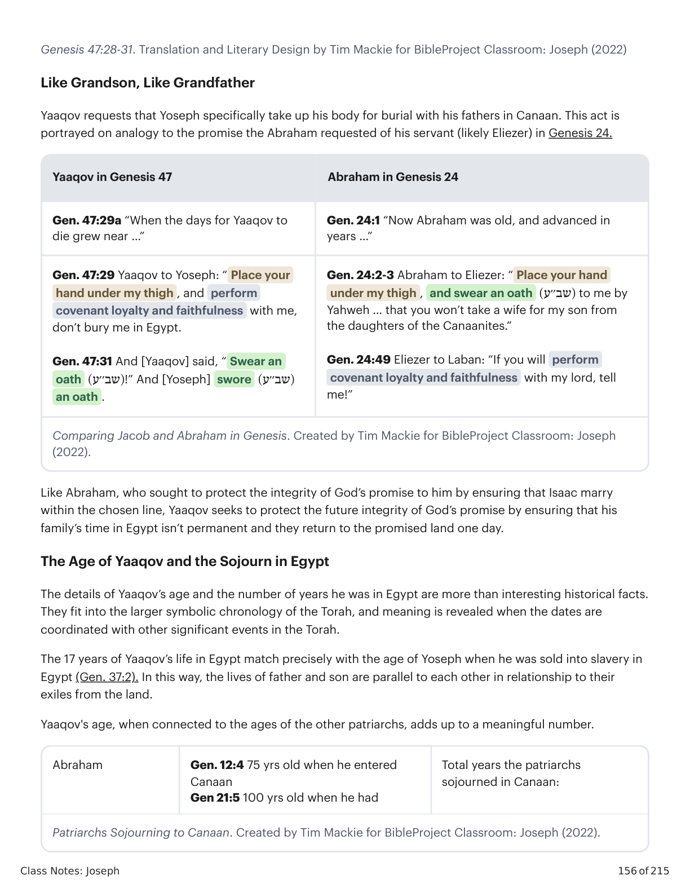
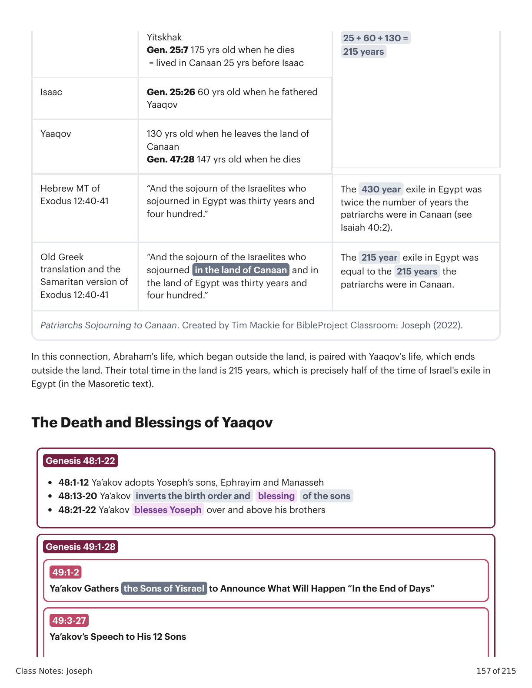
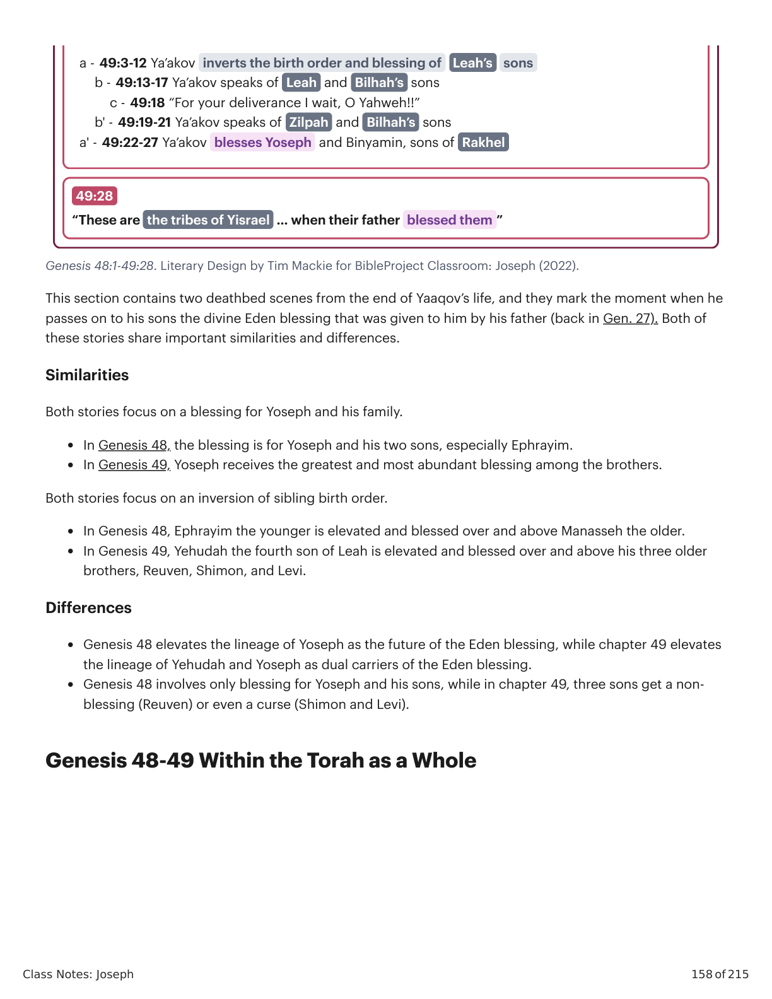
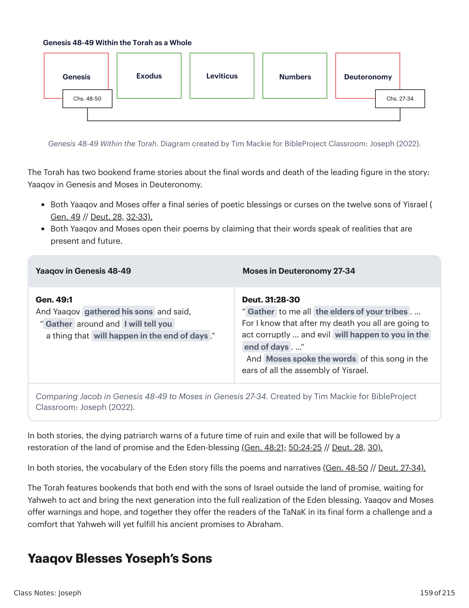
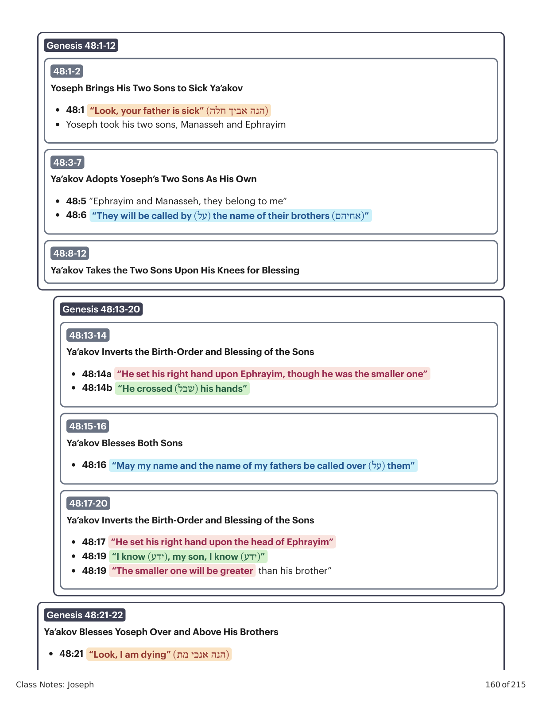
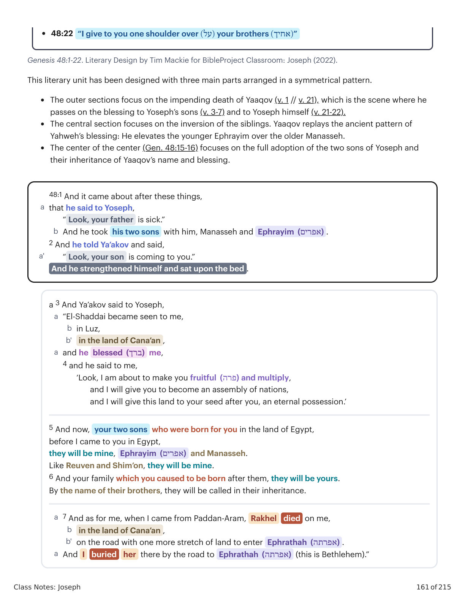
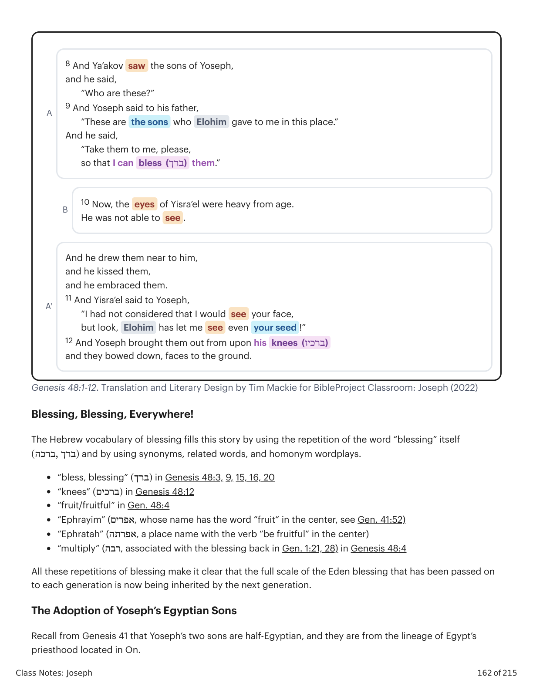
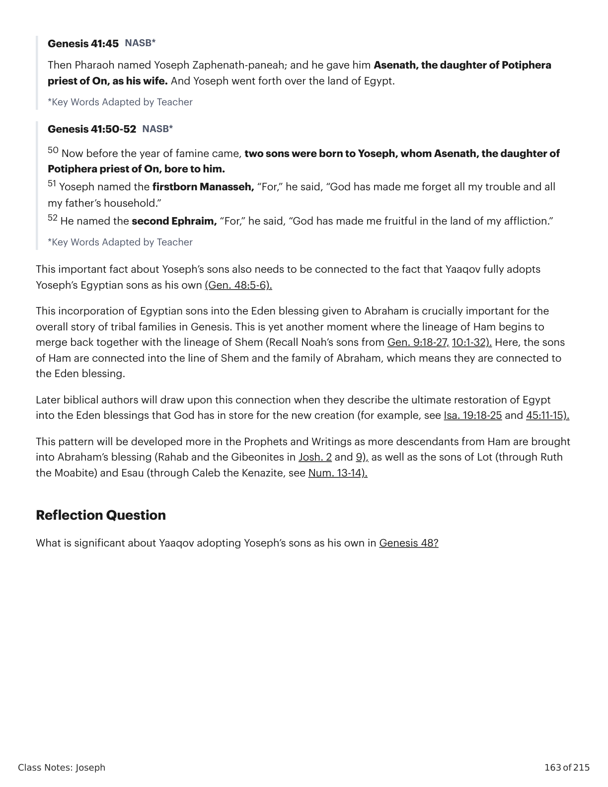

Jacó Abençoa os Filhos de JoséJacob Blesses Joseph’s Sons
Class Notes: Joseph
155 of 215
Session 21: Jacob Blesses Joseph’s Sons
Key Takeaways
As Genesis draws to a close, the narrative revisits the question of how God's blessing of Abraham will
carry forward, with an intensification of blessing vocabulary not seen for many chapters.
Yaaqov blessing his sons in Genesis 48-49 is matched by Moses blessing the tribes of Israel at the end
of Deuteronomy, creating a bookend frame around the whole Torah.
Yaaqov adopts Joseph’s Egyptian sons as his own, making Egypt part of the family of promise and
pointing to a future hope of the inclusion of the nations in the Eden blessing of Abraham’s family.
Yaaqov Commissions Yoseph To Bury Him in Canaan
28 And Ya’akov lived in the land of Egypt for seven (שבע) and ten years ,
a
and the days of Ya’akov,
b
the years of his life ,
b'
were seven (שבע) and forty and one hundred years .
a'
a
29 And the days for Yisra’el to die came near.
And he called for his son, for Yoseph,
and he said to him,
b
“If, please , I have found favor in your eyes,
please set your hand under my thigh,
and perform loyal love and faithfulness for me:
please , do not bury me in Egypt.
a
30 But I will lay down with my fathers ,
and you will take me up from Egypt,
and you will bury me in their graves.”
And he said,
“I will do according your word.”
31 And he said,
“ Swear an oath (השבעה) !”
And he swore an oath (ישבע) to him,
and Yisra’el bowed down upon the head of the bed.

Gênesis X:Y. Tradução e Design Literário por Tim Mackie para BibleProject Classroom: José (2021).Genesis X:Y. Translation and Literary Design by Tim Mackie for BibleProject Classroom: Joseph (2021).
Class Notes: Joseph
156 of 215
Genesis 47:28-31. Translation and Literary Design by Tim Mackie for BibleProject Classroom: Joseph (2022)
Like Grandson, Like Grandfather
Yaaqov requests that Yoseph specifically take up his body for burial with his fathers in Canaan. This act is
portrayed on analogy to the promise the Abraham requested of his servant (likely Eliezer) in Genesis 24.
Yaaqov in Genesis 47
Abraham in Genesis 24
Gen. 47:29a “When the days for Yaaqov to
die grew near …”
Gen. 24:1 “Now Abraham was old, and advanced in
years …”
Gen. 47:29 Yaaqov to Yoseph: “ Place your
hand under my thigh , and perform
covenant loyalty and faithfulness with me,
don’t bury me in Egypt.
Gen. 47:31 And [Yaaqov] said, “ Swear an
oath )(שב׳׳ע!” And [Yoseph] swore )(שב׳׳ע
an oath .
Gen. 24:2-3 Abraham to Eliezer: “ Place your hand
under my thigh , and swear an oath )(שב׳׳ע to me by
Yahweh … that you won’t take a wife for my son from
the daughters of the Canaanites.”
Gen. 24:49 Eliezer to Laban: “If you will perform
covenant loyalty and faithfulness with my lord, tell
me!”
Comparing Jacob and Abraham in Genesis. Created by Tim Mackie for BibleProject Classroom: Joseph
(2022).
Like Abraham, who sought to protect the integrity of God’s promise to him by ensuring that Isaac marry
within the chosen line, Yaaqov seeks to protect the future integrity of God’s promise by ensuring that his
family’s time in Egypt isn’t permanent and they return to the promised land one day.
The Age of Yaaqov and the Sojourn in Egypt
The details of Yaaqov’s age and the number of years he was in Egypt are more than interesting historical facts.
They fit into the larger symbolic chronology of the Torah, and meaning is revealed when the dates are
coordinated with other significant events in the Torah.
The 17 years of Yaaqov’s life in Egypt match precisely with the age of Yoseph when he was sold into slavery in
Egypt (Gen. 37:2). In this way, the lives of father and son are parallel to each other in relationship to their
exiles from the land.
Yaaqov's age, when connected to the ages of the other patriarchs, adds up to a meaningful number.
Abraham
Gen. 12:4 75 yrs old when he entered
Canaan
Gen 21:5 100 yrs old when he had
Total years the patriarchs
sojourned in Canaan:
Patriarchs Sojourning to Canaan. Created by Tim Mackie for BibleProject Classroom: Joseph (2022).

Gênesis X:Y. Tradução e Design Literário por Tim Mackie para BibleProject Classroom: José (2021).Genesis X:Y. Translation and Literary Design by Tim Mackie for BibleProject Classroom: Joseph (2021).
Class Notes: Joseph
157 of 215
Yitskhak
Gen. 25:7 175 yrs old when he dies
= lived in Canaan 25 yrs before Isaac
25 + 60 + 130 =
215 years
Isaac
Gen. 25:26 60 yrs old when he fathered
Yaaqov
Yaaqov
130 yrs old when he leaves the land of
Canaan
Gen. 47:28 147 yrs old when he dies
Hebrew MT of
Exodus 12:40-41
“And the sojourn of the Israelites who
sojourned in Egypt was thirty years and
four hundred.”
The 430 year exile in Egypt was
twice the number of years the
patriarchs were in Canaan (see
Isaiah 40:2).
Old Greek
translation and the
Samaritan version of
Exodus 12:40-41
“And the sojourn of the Israelites who
sojourned in the land of Canaan and in
the land of Egypt was thirty years and
four hundred.”
The 215 year exile in Egypt was
equal to the 215 years the
patriarchs were in Canaan.
Patriarchs Sojourning to Canaan. Created by Tim Mackie for BibleProject Classroom: Joseph (2022).
In this connection, Abraham's life, which began outside the land, is paired with Yaaqov's life, which ends
outside the land. Their total time in the land is 215 years, which is precisely half of the time of Israel's exile in
Egypt (in the Masoretic text).
The Death and Blessings of Yaaqov
Genesis 48:1-22
• 48:1-12 Ya’akov adopts Yoseph’s sons, Ephrayim and Manasseh
• 48:13-20 Ya’akov inverts the birth order and
blessing
of the sons
• 48:21-22 Ya’akov blesses Yoseph over and above his brothers
Genesis 49:1-28
49:1-2
Ya’akov Gathers the Sons of Yisrael to Announce What Will Happen “In the End of Days”
49:3-27
Ya’akov’s Speech to His 12 Sons

Gênesis X:Y. Tradução e Design Literário por Tim Mackie para BibleProject Classroom: José (2021).Genesis X:Y. Translation and Literary Design by Tim Mackie for BibleProject Classroom: Joseph (2021).
Class Notes: Joseph
158 of 215
Genesis 48:1-49:28. Literary Design by Tim Mackie for BibleProject Classroom: Joseph (2022).
This section contains two deathbed scenes from the end of Yaaqov’s life, and they mark the moment when he
passes on to his sons the divine Eden blessing that was given to him by his father (back in Gen. 27). Both of
these stories share important similarities and differences.
Similarities
Both stories focus on a blessing for Yoseph and his family.
In Genesis 48, the blessing is for Yoseph and his two sons, especially Ephrayim.
In Genesis 49, Yoseph receives the greatest and most abundant blessing among the brothers.
Both stories focus on an inversion of sibling birth order.
In Genesis 48, Ephrayim the younger is elevated and blessed over and above Manasseh the older.
In Genesis 49, Yehudah the fourth son of Leah is elevated and blessed over and above his three older
brothers, Reuven, Shimon, and Levi.
Differences
Genesis 48 elevates the lineage of Yoseph as the future of the Eden blessing, while chapter 49 elevates
the lineage of Yehudah and Yoseph as dual carriers of the Eden blessing.
Genesis 48 involves only blessing for Yoseph and his sons, while in chapter 49, three sons get a non-
blessing (Reuven) or even a curse (Shimon and Levi).
Genesis 48-49 Within the Torah as a Whole
a - 49:3-12 Ya’akov inverts the birth order and blessing of
Leah’s
sons
b - 49:13-17 Ya’akov speaks of Leah and Bilhah’s sons
c - 49:18 “For your deliverance I wait, O Yahweh!!”
b' - 49:19-21 Ya’akov speaks of Zilpah and Bilhah’s sons
a' - 49:22-27 Ya’akov blesses Yoseph and Binyamin, sons of Rakhel
49:28
“These are the tribes of Yisrael … when their father blessed them ”

Gênesis X:Y. Tradução e Design Literário por Tim Mackie para BibleProject Classroom: José (2021).Genesis X:Y. Translation and Literary Design by Tim Mackie for BibleProject Classroom: Joseph (2021).
Class Notes: Joseph
159 of 215
Genesis 48-49 Within the Torah. Diagram created by Tim Mackie for BibleProject Classroom: Joseph (2022).
The Torah has two bookend frame stories about the final words and death of the leading figure in the story:
Yaaqov in Genesis and Moses in Deuteronomy.
Both Yaaqov and Moses offer a final series of poetic blessings or curses on the twelve sons of Yisrael (
Gen. 49 // Deut. 28, 32-33).
Both Yaaqov and Moses open their poems by claiming that their words speak of realities that are
present and future.
Yaaqov in Genesis 48-49
Moses in Deuteronomy 27-34
Gen. 49:1
And Yaaqov gathered his sons and said,
“ Gather around and I will tell you
a thing that will happen in the end of days .”
Deut. 31:28-30
“ Gather to me all the elders of your tribes . …
For I know that after my death you all are going to
act corruptly … and evil will happen to you in the
end of days . …”
And Moses spoke the words of this song in the
ears of all the assembly of Yisrael.
Comparing Jacob in Genesis 48-49 to Moses in Genesis 27-34. Created by Tim Mackie for BibleProject
Classroom: Joseph (2022).
In both stories, the dying patriarch warns of a future time of ruin and exile that will be followed by a
restoration of the land of promise and the Eden-blessing (Gen. 48:21; 50:24-25 // Deut. 28, 30).
In both stories, the vocabulary of the Eden story fills the poems and narratives (Gen. 48-50 // Deut. 27-34).
The Torah features bookends that both end with the sons of Israel outside the land of promise, waiting for
Yahweh to act and bring the next generation into the full realization of the Eden blessing. Yaaqov and Moses
offer warnings and hope, and together they offer the readers of the TaNaK in its final form a challenge and a
comfort that Yahweh will yet fulfill his ancient promises to Abraham.
Yaaqov Blesses Yoseph’s Sons

Gênesis X:Y. Tradução e Design Literário por Tim Mackie para BibleProject Classroom: José (2021).Genesis X:Y. Translation and Literary Design by Tim Mackie for BibleProject Classroom: Joseph (2021).
Class Notes: Joseph
160 of 215
Genesis 48:1-12
48:1-2
Yoseph Brings His Two Sons to Sick Ya’akov
• 48:1 “Look, your father is sick” )(הנה אביך חלה
• Yoseph took his two sons, Manasseh and Ephrayim
48:3-7
Ya’akov Adopts Yoseph’s Two Sons As His Own
• 48:5 “Ephrayim and Manasseh, they belong to me”
• 48:6 “They will be called by )(על the name of their brothers )(אחיהם”
48:8-12
Ya’akov Takes the Two Sons Upon His Knees for Blessing
Genesis 48:13-20
48:13-14
Ya’akov Inverts the Birth-Order and Blessing of the Sons
• 48:14a “He set his right hand upon Ephrayim, though he was the smaller one”
• 48:14b “He crossed )(שכל his hands”
48:15-16
Ya’akov Blesses Both Sons
• 48:16 “May my name and the name of my fathers be called over )(על them”
48:17-20
Ya’akov Inverts the Birth-Order and Blessing of the Sons
• 48:17 “He set his right hand upon the head of Ephrayim”
• 48:19 “I know )(ידע, my son, I know )(ידע”
• 48:19 “The smaller one will be greater than his brother”
Genesis 48:21-22
Ya’akov Blesses Yoseph Over and Above His Brothers
• 48:21 “Look, I am dying” )(הנה אנכי מת

Gênesis X:Y. Tradução e Design Literário por Tim Mackie para BibleProject Classroom: José (2021).Genesis X:Y. Translation and Literary Design by Tim Mackie for BibleProject Classroom: Joseph (2021).
Class Notes: Joseph
161 of 215
Genesis 48:1-22. Literary Design by Tim Mackie for BibleProject Classroom: Joseph (2022).
This literary unit has been designed with three main parts arranged in a symmetrical pattern.
The outer sections focus on the impending death of Yaaqov (v. 1 // v. 21), which is the scene where he
passes on the blessing to Yoseph’s sons (v. 3-7) and to Yoseph himself (v. 21-22).
The central section focuses on the inversion of the siblings. Yaaqov replays the ancient pattern of
Yahweh’s blessing: He elevates the younger Ephrayim over the older Manasseh.
The center of the center (Gen. 48:15-16) focuses on the full adoption of the two sons of Yoseph and
their inheritance of Yaaqov’s name and blessing.
• 48:22 “I give to you one shoulder over )(על your brothers )(אחיך”
a
48:1 And it came about after these things,
that he said to Yoseph,
“ Look, your father is sick.”
b And he took his two sons with him, Manasseh and Ephrayim (אפרים) .
a'
2 And he told Ya’akov and said,
“ Look, your son is coming to you.”
And he strengthened himself and sat upon the bed .
a 3 And Ya’akov said to Yoseph,
“El-Shaddai became seen to me,
a
in Luz,
b
in the land of Cana’an ,
b'
and he blessed (ברך) me,
a
4 and he said to me,
‘Look, I am about to make you fruitful (פרה) and multiply,
and I will give you to become an assembly of nations,
and I will give this land to your seed after you, an eternal possession.’
5 And now, your two sons who were born for you in the land of Egypt,
before I came to you in Egypt,
they will be mine, Ephrayim (אפרים) and Manasseh.
Like Reuven and Shim’on, they will be mine.
6 And your family which you caused to be born after them, they will be yours.
By the name of their brothers, they will be called in their inheritance.
7 And as for me, when I came from Paddan-Aram, Rakhel
died on me,
a
in the land of Cana’an ,
b
on the road with one more stretch of land to enter Ephrathah (אפרתה) .
b'
And I
buried
her there by the road to Ephrathah (אפרתה) (this is Bethlehem).”
a

Gênesis X:Y. Tradução e Design Literário por Tim Mackie para BibleProject Classroom: José (2021).Genesis X:Y. Translation and Literary Design by Tim Mackie for BibleProject Classroom: Joseph (2021).
Class Notes: Joseph
162 of 215
Genesis 48:1-12. Translation and Literary Design by Tim Mackie for BibleProject Classroom: Joseph (2022)
Blessing, Blessing, Everywhere!
The Hebrew vocabulary of blessing fills this story by using the repetition of the word “blessing” itself
)(ברך ,ברכה and by using synonyms, related words, and homonym wordplays.
“bless, blessing” )(ברך in Genesis 48:3, 9, 15, 16, 20
“knees” )(ברכים in Genesis 48:12
“fruit/fruitful” in Gen. 48:4
“Ephrayim” (אפרים, whose name has the word “fruit“ in the center, see Gen. 41:52)
“Ephratah” (אפרתה, a place name with the verb “be fruitful” in the center)
“multiply” (רבה, associated with the blessing back in Gen. 1:21, 28) in Genesis 48:4
All these repetitions of blessing make it clear that the full scale of the Eden blessing that has been passed on
to each generation is now being inherited by the next generation.
The Adoption of Yoseph’s Egyptian Sons
Recall from Genesis 41 that Yoseph’s two sons are half-Egyptian, and they are from the lineage of Egypt’s
priesthood located in On.
A
8 And Ya’akov saw the sons of Yoseph,
and he said,
“Who are these?”
9 And Yoseph said to his father,
“These are the sons who Elohim gave to me in this place.”
And he said,
“Take them to me, please,
so that I can bless (ברך) them.”
B
10 Now, the eyes of Yisra’el were heavy from age.
He was not able to see .
A'
And he drew them near to him,
and he kissed them,
and he embraced them.
11 And Yisra’el said to Yoseph,
“I had not considered that I would see your face,
but look, Elohim has let me see even your seed !”
12 And Yoseph brought them out from upon his knees (ברכיו)
and they bowed down, faces to the ground.

Gênesis X:Y. Tradução e Design Literário por Tim Mackie para BibleProject Classroom: José (2021).Genesis X:Y. Translation and Literary Design by Tim Mackie for BibleProject Classroom: Joseph (2021).
Class Notes: Joseph
163 of 215
Genesis 41:45 NASB*
Then Pharaoh named Yoseph Zaphenath-paneah; and he gave him Asenath, the daughter of Potiphera
priest of On, as his wife. And Yoseph went forth over the land of Egypt.
*Key Words Adapted by Teacher
Genesis 41:50-52 NASB*
50 Now before the year of famine came, two sons were born to Yoseph, whom Asenath, the daughter of
Potiphera priest of On, bore to him.
51 Yoseph named the firstborn Manasseh, “For,” he said, “God has made me forget all my trouble and all
my father’s household.”
52 He named the second Ephraim, “For,” he said, “God has made me fruitful in the land of my affliction.”
*Key Words Adapted by Teacher
This important fact about Yoseph’s sons also needs to be connected to the fact that Yaaqov fully adopts
Yoseph’s Egyptian sons as his own (Gen. 48:5-6).
This incorporation of Egyptian sons into the Eden blessing given to Abraham is crucially important for the
overall story of tribal families in Genesis. This is yet another moment where the lineage of Ham begins to
merge back together with the lineage of Shem (Recall Noah’s sons from Gen. 9:18-27, 10:1-32). Here, the sons
of Ham are connected into the line of Shem and the family of Abraham, which means they are connected to
the Eden blessing.
Later biblical authors will draw upon this connection when they describe the ultimate restoration of Egypt
into the Eden blessings that God has in store for the new creation (for example, see Isa. 19:18-25 and 45:11-15).
This pattern will be developed more in the Prophets and Writings as more descendants from Ham are brought
into Abraham’s blessing (Rahab and the Gibeonites in Josh. 2 and 9), as well as the sons of Lot (through Ruth
the Moabite) and Esau (through Caleb the Kenazite, see Num. 13-14).
Reflection Question
What is significant about Yaaqov adopting Yoseph’s sons as his own in Genesis 48?

Gênesis X:Y. Tradução e Design Literário por Tim Mackie para BibleProject Classroom: José (2021).Genesis X:Y. Translation and Literary Design by Tim Mackie for BibleProject Classroom: Joseph (2021).